Published: 2023-10-24
Source link: https://www.cnphotos.net/academy/show-154.html
■ Subject | Zhao Shoujun
■ Reporter | Zhang Yue
■ Editor | Zhou Yimeng
■ Chief editor | Chen Xiaojun
The China Photos Top Ten Photographers award picks the best work of each year. It encourages and honors outstanding photographers who excel in artistic creation, sparks their drive, and brings out more work that speaks for the new era, shows the people's effort, lifts the national spirit, and cultivates noble feeling.
For the 2022 fifth Top Ten award, after a curated show, public voting, a final review by noted photographers and experts, and a public notice, the year's Top Ten photographers and nominees were chosen.
To show the masters' classic work and their creative journey, and to build a wider space for exchange, China Photos will interview this year's Top Ten photographers and tell the stories behind their work. A Top Ten album will be published later.
This issue: an interview with photographer Zhao Shoujun.
— Editor's note
Preface
Zhao Shoujun's work holds the truth of life and a plainness that comes after years of refining. This plainness is everyday, but never ordinary.
In his images, he once cared deeply about craft and fine light. He also learned humbly, drew on experience, and tried different viewpoints to build a rich, layered narrative. But he held to his own heart and, after much training, returned to an eye-level view. This eye level is an equal relation with his subjects, a heart-to-heart link, and no arrogance. It also shows in how he shoots. His work does not force visual gimmicks or frame tension. It shows life as it is. His mood is calm. The photo world is noisy, but fame and profit do not weigh on him. He faces his work honestly, admits its flaws, accepts himself, and photographs freely. I find this rare.
Looking at his work, you feel this warm temper shaping his art. It reminds me of the old film August Photographic Studio, about an ordinary man who runs a photo shop, a slice of his life. At first the story seems quiet and undramatic. But once you settle in, it grows on you. Long after, it may suddenly take hold, you understand its flavor, and you smile, feeling warm. Zhao says his understanding of photography has deepened step by step. Much of his current work is long observation, and that is what sets it apart from amateur play.
Richness grows from the simple, and the deepest taste rests in plainness. Today's photography is wide and wild, and the experiments in ideas and visual language are dazzling. But return to the person who holds the camera. We may all share a plain wish: to observe society and record life.
Zhang Yue
October 13, 2023
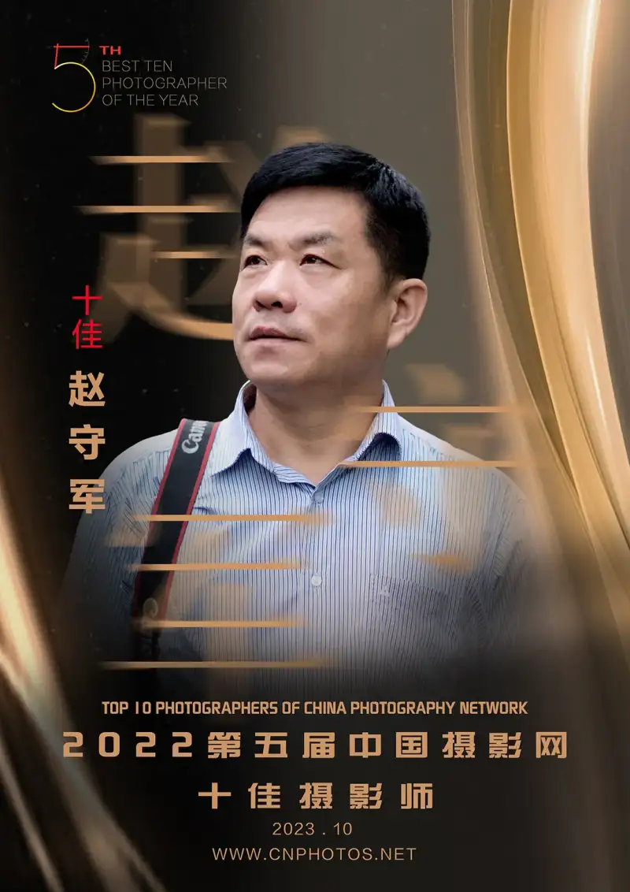
Zhao Shoujun, born in Zichuan, Shandong. He is a member of the China Photographers Association, vice chair of the Zibo Photographers Association, chair of the Zichuan District Photographers Association, and a signed photographer for China Photos. He was named a 2022 Top Ten photographer in 2023, and an outstanding Shandong member in 2021. Phone Era was selected for the 27th National Photography Exhibition in 2019 and shown at the 13th China Photography Art Festival in 2020. Desolate Beach Then, Golden Beach Today was selected for the 8th China International Photography Exhibition in 1997. Crossroads of Life on the Zebra Crossing won the Gold Lens Silver Award of the People's Photography China News Award in 2014, and he published the documentary book China's Zebra Crossing the same year.
Zhang Yue of China Photos (below, Zhang Yue): I read much about you online, that you were born in the 1960s to a coal-miner's family. Can you tell me about your family and its story?
Zhao Shoujun, China Photos Top Ten photographer (below, Zhao Shoujun): My father was a barber at the mine, and my mother was illiterate, a dependent worker who did manual labor. I grew up in the mine's family housing. I went to the mine school. As a child I picked up coal cinders and gathered firewood for pancakes. After high school, while waiting for work, I pulled carts at a brick yard. I grew up among ordinary people and the everyday life around them.
There were five of us. My older sister, the eldest, joined a district enterprise. My eldest brother served as air-force ground crew, moved to a military command office, and retired as a senior officer and a calligrapher. My second brother started as a worker and became a political-work executive at a large steel mill. My third brother started as a traffic officer and moved to office and political-work posts. We all love literature and art. My two older brothers have published books. Years of family culture quietly helped my photography grow.
I loved drawing as a child. Though money was tight, my family bought me art books and supplies and encouraged me. When I started work on the factory floor, my writing and drawing got me moved to the union office for publicity. There I picked up a camera and moved from painting to photography.
Zhang Yue: Reports say you began photography in the 1980s, one of the earliest after reform and opening. What drew you to it? What gear did you use then, and what did you first shoot?
Zhao Shoujun: Before the cement plant, I had art training in still life, plaster casts, portrait sketching, gouache, and oil. I once applied to art school and passed the art exam but failed academics. In 1980 I joined a state cement plant and did hard labor, crushing, and ball-mill work. The plant was new, dust control was poor, and we wore masks and hoods. The work was harsh. Because I liked drawing, I subscribed to Art magazine and taught myself. I painted blackboard posters at the plant and often won prizes. That prepared me for photography. When I moved to the union office, I began to learn it.
I used Seagull and Ricoh cameras. I shot plant meetings and sports and culture events: award rallies, basketball, volleyball, and table-tennis games, portraits of model workers, and group photos of advanced teams. I also developed prints and changed the company display windows.
To adapt and improve, I subscribed to China Photonews, People's Photography, Chinese Photography, and Popular Photography, and kept these two papers and two magazines for decades.
Wide reading raised my horizons and showed me where photography stood. My focus shifted. In the early 1990s I shot landscapes in Xinjiang, western Sichuan, Guilin, and Bashang. Only later did I turn to humanistic documentary.
Zhang Yue: How did you first enter photo circles?
Zhao Shoujun: At first I did publicity at a closed factory and taught myself from magazines. I submitted work and won prizes at district, city, and provincial level. Liu Hong, then chair of the district association, brought me in and made me vice chair. I entered contests and slowly built a record. The city chairs Liu Tongai and Sun Weiqing noticed me, and I joined the city association, then its board, and became vice chair.
Zibo is a third-tier city, but its photo scene is strong and well known. Its national selections and awards match some provincial capitals. That community shaped me directly.
Zhang Yue: Your Cement Men series from 1990 to 2006 shows workers whose dedication moves me. Can you talk about how you made it and the stories it brought?
Zhao Shoujun: I shot the cement plant where I worked. In the early 1990s I began to photograph my coworkers in the Cement Men series. Most came from nearby villages and were in their twenties to fifties. In every season they wore shoulder hats and dust masks. Each man moved nearly a thousand bags a day, at 50 kilograms each.
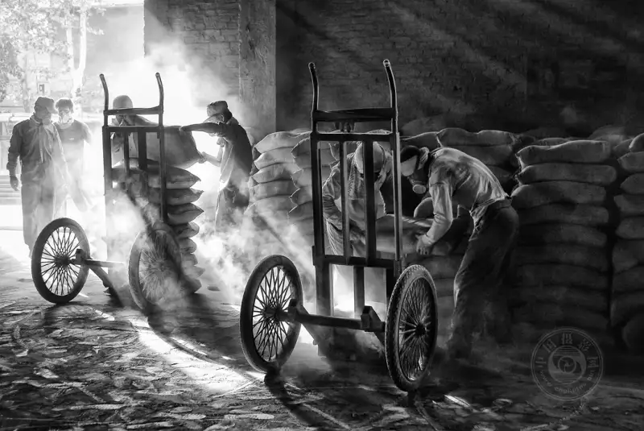
“Cement Men” series
June 2004, Zichuan, Shandong
Sunlight through the warehouse door
makes the dust in the air visible.
In summer, the heat and the scalding cement they carried on their shoulders were unbearable. This heavy labor was how they fed their families. When I shot them, I dressed the same way, wrapped my camera in plastic, and moved through the dusty warehouse, making portraits of my coworkers again and again. I recorded their work as it was, with no distance, only friendship. I also took group photos and gave each man a print. As the plant modernized, it finally installed a mechanical loader in 2007. Output rose, and my coworkers became the last hand loaders.
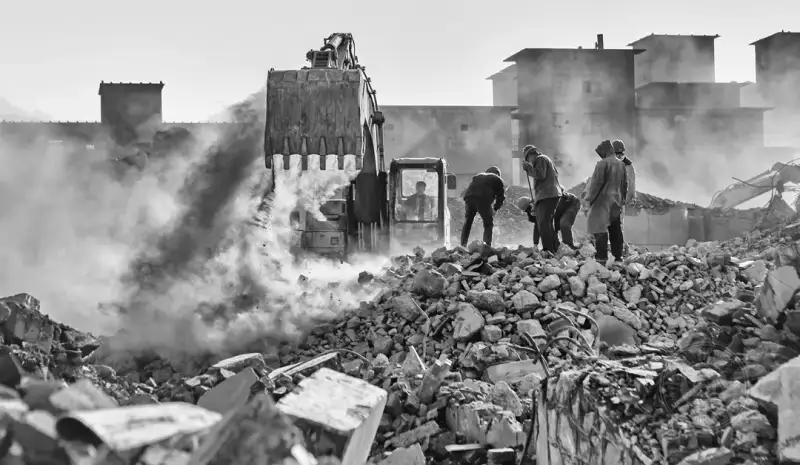
“Cement Men” series
March 2013, Zichuan, Shandong
The vertical kiln closed for urban environmental rules,
ending 35 years of production and set for demolition.
The Cement Men series won third prize in the Popular Photography monthly contest, a bronze at the 1997 Bank of China Cup new-work show, and a place in the Qilu Contemporary Photography Exhibition. The black-and-white scenes, real places, and pioneering spirit of the time moved many people.
I shot early work on film and later digitally. The raw scenes hold my feeling and respect for my coworkers. Looking back, I regret shooting too little of their daily and family life, and not going deeper. I missed many hidden elements.
Zhang Yue: Cement Men is carefully composed, toned, and layered, and it differs a lot from your later work. Why?
Zhao Shoujun: Yes, I shot Cement Men for years. Eighteen years on, I learned that my old coworkers now run restaurants, other businesses, or farms. I plan to follow their lives. I shot from the early 1990s to 2006. Back then I read less, lacked expert guidance, and my horizons were limited. Even though I read papers, the work still leaned on light and form and felt a bit craft-bound, and it did not record their lives deeply enough. The noted photographer and critic Cai Huansong wrote a review called The Union of Record and Art about my work in People's Photography, which encouraged me greatly. As I studied, visited shows, and learned from photographers, my understanding deepened, my thinking about features grew, and my style changed.
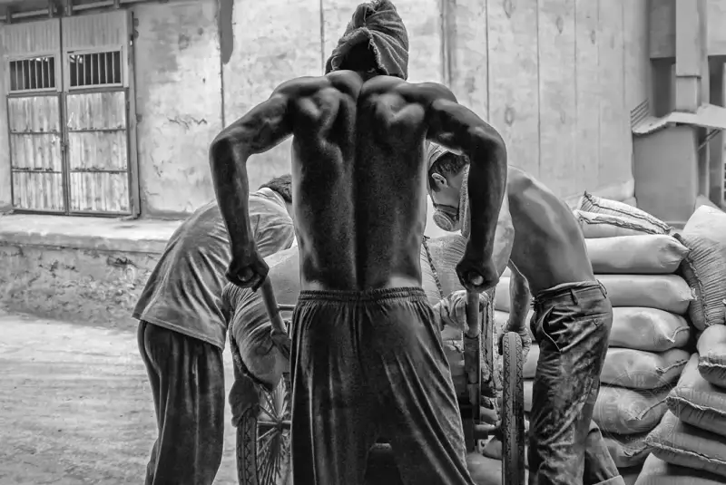
“Cement Men” series
July 2004, Zichuan, Shandong
Hard physical labor
forged strong bodies.
Zhang Yue: What stages did this shift go through, and what changed?
Zhao Shoujun: Stage one: I shot events, shows, and meetings, and the expression was plain and direct.
Stage two: I focused on landscape and travel photography, recording scenic beauty.
Stage three: I turned to humanistic documentary. I felt its subjects were broad and the room to shoot was huge.
Stage four: I thought more deeply about photography and sought representative subjects with social weight, to leave images that history will remember.
Zhang Yue: You mentioned the eye-level view. Has anyone said it lacks visual tension and does not grab the eye, that only experienced readers feel your intent? How do you see that?
Zhao Shoujun: They have a point. Different people see work differently, and work has different uses. Some suits contests, some suits exhibitions. My Making a Living project works better as a book or show. My Small Stalls, Everyday Life feature ran as a full page in China Photonews with a review by Li Baijun, but it would not suit national contests.
The visual tension you mention is an exaggerated visual language that tells a story in a line, moving from wide scene to medium to close-up, with details building layer by layer. My own eye works in parallel, one photo, one story.
So I want to keep Making a Living as a long-term record, and later, if I can, hold a show or publish a book.
I have shot for over thirty years, so I understand how to drive impact. But on the whole I prefer this plain, calm, casual way of expression. I am not a propaganda office and have no quota to fill. I am a free photographer and an enthusiast, with no pressure. I am also introverted, not talkative, and not showy. You can read a photographer's character in their work, just as each painter has a style that comes from who they are.
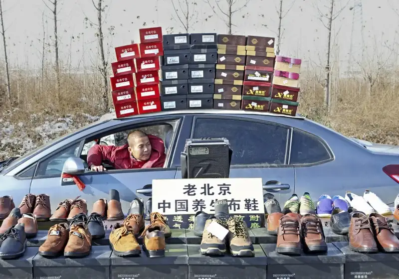
“Making a Living” series
November 27, 2015, Zichuan, Shandong
A sedan becomes a shoe seller's shop.
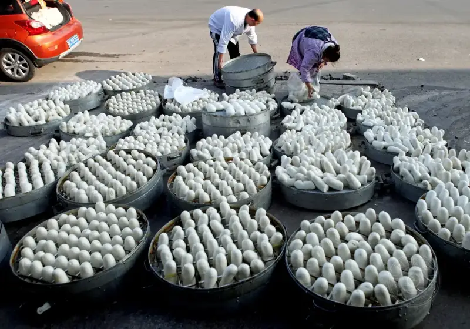
“Making a Living” series
March 2019, Zichuan, Shandong
Fresh steamed buns being bagged for sale.
Zhang Yue: I admire Making a Living. The people in it struggle every day to get by, and they deserve respect. What stories sit behind these moving images? Do you stay in touch with your subjects, and will you keep following their lives?
Zhao Shoujun: My own background gives me a closeness to these people. It is not looking down, not pity, and not a show for a project. Recording how people live is itself a reflection of reality and of the hard work it takes to rise out of poverty. I mostly shot candid records and never sat and talked with them. I have no deep ties. But that does not stop me from watching, recording, and keeping on. I will keep shooting this kind of documentary.
Zhang Yue: Which book is China's Zebra Crossing? Can you describe your books, how you chose each subject, and how you planned, shot, and published them?
Zhao Shoujun: China's Zebra Crossing is my only book. I began the crossing project in 2010. I worked 28 years at the cement plant, then left in 2007 to do sales at a relative's company. I traveled often for business, and that turned me toward urban subjects, because most photographers already cover rural life superbly. But city subjects are broad and hard to handle. My first idea was to find one small point in the city to build a feature around. In October 2010 I visited the Shanghai Expo and wanted to record it. Standing on a high point in the center, I watched the crowds. The white zebra crossings stood out strongly against the moving people, and I caught the visual idea at once. I saw that a crossing could carry a story. I shot crossings from 2010 to 2014, five years. When I traveled to Beijing, Shanxi, Shaanxi, or Inner Mongolia, I watched for crossings. But I lived mostly in Zibo and Jinan, so most shots are from those two. Jinan was convenient, because I could step into the street after work. The contrast between the provincial capital and my county town drew my eye.
The zebra crossing comes from the stepping stones of ancient Pompeii. In the early 1950s the British designed striped pedestrian crossings. The stripes looked like a zebra's markings, so people named them zebra crossings. They are a key safe way to cross the road. I found the crossing a special place, a stage where all of life passes by.
Though the crossing is only a few dozen meters wide, the crowd crossing it shows all of society. You see busy life and streams of cars, heavy bags, lonely backs, mud in wind and snow, worn years, and fleeting strangers. That is life on the crossing. After nearly two years, I met Jiang Hao, photo chief at the Jinan Daily. He understood photography deeply, gave me much advice, and inspired me. I kept shooting for five more years and took nearly 100,000 frames. When I prepared the book, my friend Su Shaolong was going to the Pingyao International Photography Festival and asked Bao Kun to write the foreword. Jiang Hao edited and designed it, and the China Nationality Photography and Art Press published it with a standard ISBN for nationwide distribution. The documentary community platform still sells it. It sold 2,000 copies, most given to friends, teachers, and lecture members.
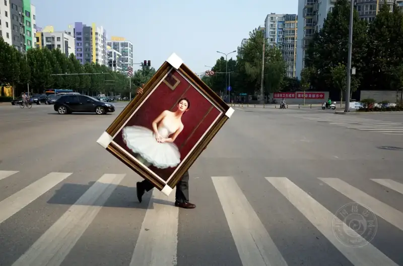
“China's Zebra Crossing” series
July 30, 2014, Jinan, Shandong
An oil painting on the crossing.
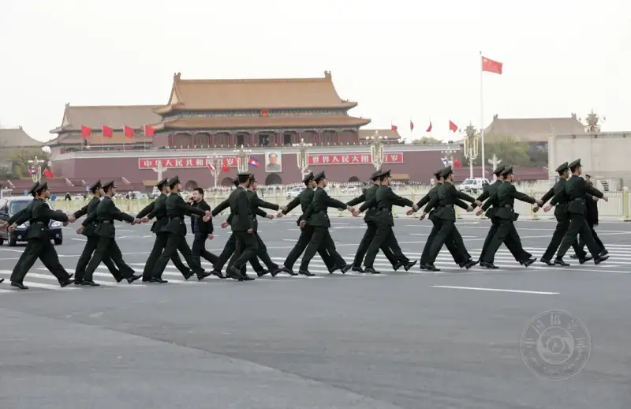
“China's Zebra Crossing” series
April 6, 2013, Beijing
A PLA honor guard crossing the street.
Zhang Yue: This spring, Zibo barbecue suddenly swept the country. Media call you one of the people who helped it catch fire. How did your photos contribute?
Zhao Shoujun: I am no driver and no bandwagon. It was just my habit to photograph. The barbecue boom is the everyday life of ordinary people, and I recorded it along the way. Major photo platforms used the shots. In that sense, I added a small touch to the fire.
As a photographer from Zibo, I felt I should record my home city's boom. My take on it is simple and surface-level, but the barbecue shows Zibo's warm service and the warmth of everyday life, and that is good. It built a shared will, with leaders and people pulling together to make the city better. That is rare and it is everyone's doing.
The boom had a cause. During the pandemic, more than ten thousand university students were quarantined in Zibo. The city treated them well and held a farewell barbecue before they left. The students were moved and promised to come back for real barbecue. When restrictions lifted, they returned and spread the word on WeChat and Douyin, and the boom went viral.
For the series Zibo Barbecue, the Warmth of People, Li Dongchuan wrote a fine review on the unseen world behind the barbecue, which raised the work and gave me more to read into. As a photographer from Zibo, I felt a duty to promote my home. I like this calm record, its emotion, its details, and the symbols of the big barbecue sites.
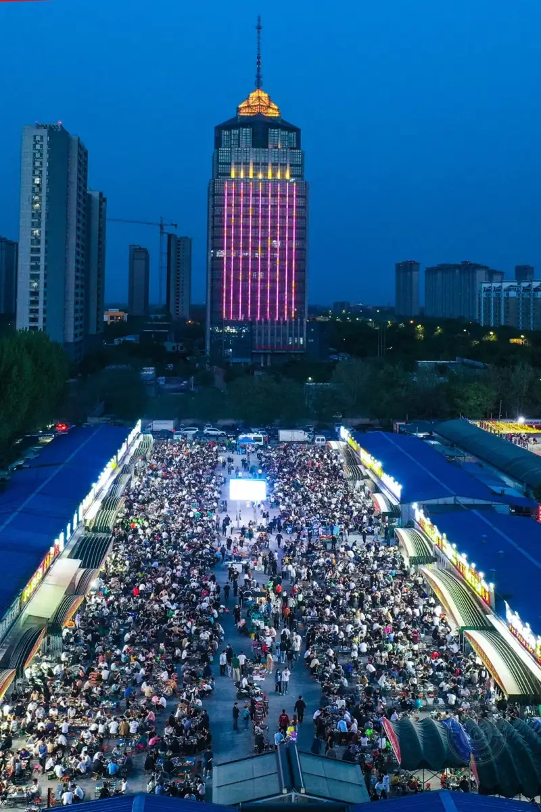
“Zibo Barbecue, the Warmth of People” series
May 2, 2023, Linzi barbecue yard, Shandong
Thousands of out-of-town visitors coming to Zibo for the barbecue.
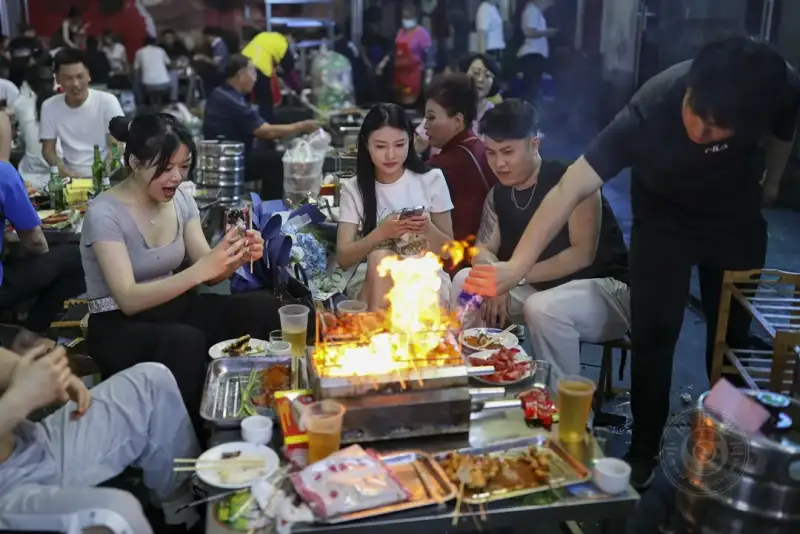
“Zibo Barbecue, the Warmth of People” series
The sincere welcome of Zibo people
draws visitors from across the country by train, plane, and car,
to enjoy the warmth of the barbecue yards.
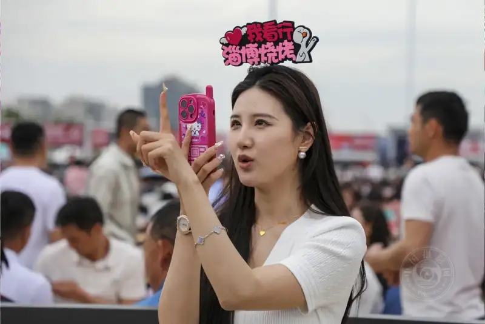
“Zibo Barbecue, the Warmth of People” series
Known influencers and tourists from across the country checking in and livestreaming.
Zhang Yue: What did you notice while shooting Zibo barbecue? How is it different from other places?
Zhao Shoujun: Zibo barbecue has a soul trio: scallions, small flatbread, and dipping sauce. The cook grills the skewers to about seventy percent, brings them to your table, and each table has a small stove. You finish grilling as you eat and talk. You wrap a cooked skewer in flatbread with scallion and sauce and roll it up. You can also grill a wrapped skewer, and the outside turns crisp while the inside stays tender.
While shooting, I asked visitors where they came from. Some were from Xinjiang, Shanxi, or Shaanxi. I asked why they came when Xinjiang barbecue is so good. They said they wanted to feel Zibo's warmth and hospitality, to taste for themselves, and to try a different flavor. The sudden national boom is worth thinking about.
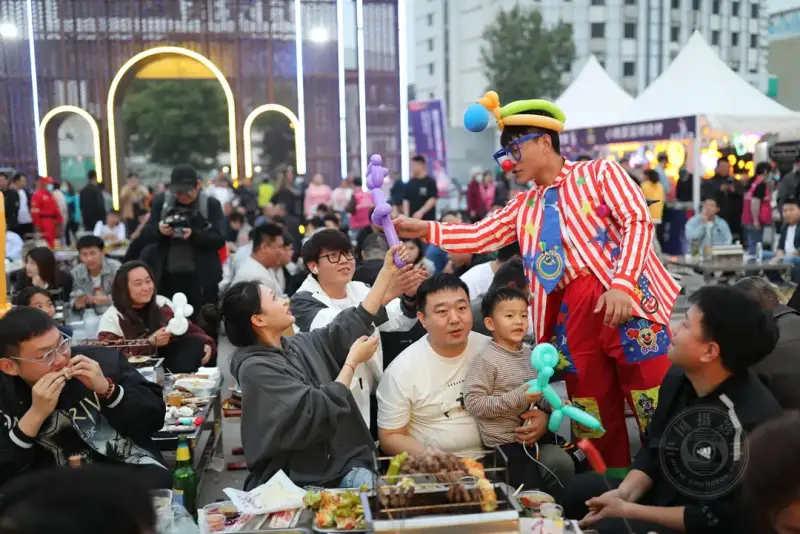
“Zibo Barbecue, the Warmth of People” series
A clown performer uses gifts
to bring smiles to diners.
Zhang Yue: The hype has cooled. Will you keep working on this subject?
Zhao Shoujun: The cooling has many causes. Nothing keeps rising forever. It will settle after a peak. Still, visitors keep coming on holidays to taste the food. Zibo may not be as hot as before, but it has changed from a plain industrial city into a place people travel to for good food, known across the country.
I published the barbecue series in Chinese Photographer, People's Photography, China Photos, and the documentary platform. Shandong Pictorial and local papers also asked for work, and the design was ready, but the province held a meeting and said not to promote the barbecue. It was too hot to handle, and they feared it would hurt their reputation if visitors were let down. So no promotion.
I would not say I dropped the subject. My focus just shifts as reality changes. Now I am shooting the former home of Pu Songling and the Liaozhai Garden. Dao Lang's song Luosha Haishi made Liaozhai City famous. Pu Songling, who wrote Strange Tales from a Chinese Studio, was from my hometown, three kilometers from my door.
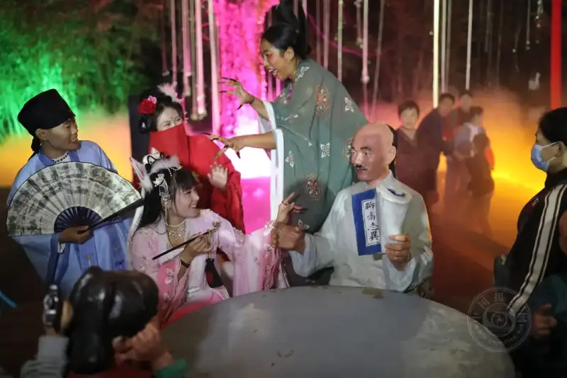
“Night Tour of Liaozhai Garden” series
October 2023, Liaozhai Garden, Zichuan, Shandong
A scene from Pu Songling's Strange Tales brought to life.
Zhang Yue: So after the barbecue cooled, the Liaozhai boom kept tourism going. Is Liaozhai City and Pu Songling's home your new subject?
Zhao Shoujun: Yes. Visitors eat barbecue and then tour the garden. Zibo producing two such hits is remarkable. The Pu Songling memorial was still under renovation and the garden was not ready. After the song went viral, people from across the country called the tourism bureau to open the site right away. It was supposed to need another two weeks, but it opened free in a hurry. The film Painted Skin held its premiere in Pujia Village, where the garden is. Cui Yongyuan hosted it and said it was the biggest premiere he had ever hosted. The stars Zhou Xun and Chen Kun were there.
I am watching and shooting the garden, but as a finished project it is not there yet. I will keep going.
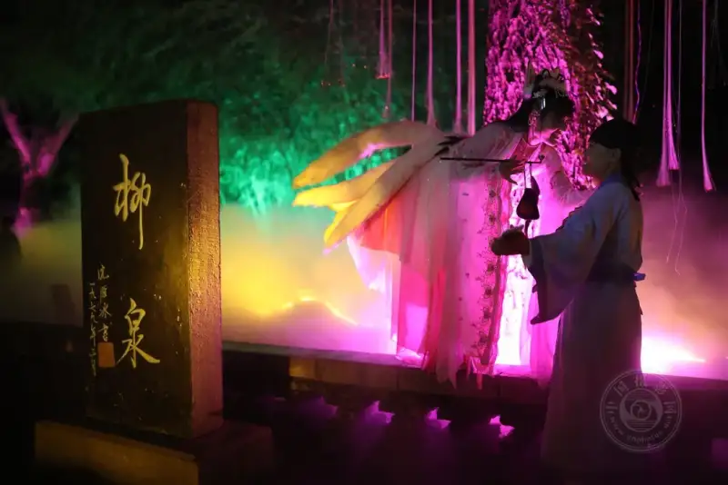
“Night Tour of Liaozhai Garden” series
October 2023, Liaozhai Garden, Zichuan, Shandong
Young people act out a Liaozhai story by Willow Spring.
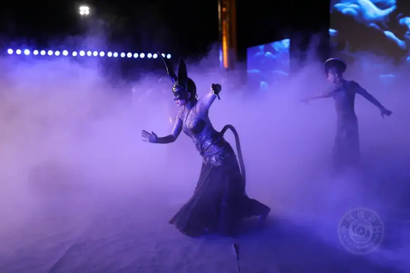
“Night Tour of Liaozhai Garden” series
October 2023, Liaozhai Garden, Zichuan, Shandong
The Zibo Song and Dance Troupe performing Painted Skin.
Zhang Yue: What is your day job now, and is it tied to photography?
Zhao Shoujun: I manage a company that makes support materials and equipment for coal mines, and I help with sales. I travel with sales managers, mostly to Inner Mongolia and Shaanxi.
Zhang Yue: You run a business and shoot. Do you have enough time for photography?
Zhao Shoujun: The business is calmer now and the younger staff take on more, so I have more time. Photography takes energy, but it is a lifelong passion. I loved art as a boy, picked up a camera for work, and slowly fell for photography. Looking back, it is both my starting point and my anchor. It releases my spirit and my feelings, so I will keep doing it.
In the district association, I also organize members to shoot and create, and to support government publicity. Since taking the post, I first found an office, set up a photo members' home, installed a large-format Epson printer, and built an exchange room, a reading room, and a portrait studio. Through this base we train photographers, make better work, and serve society.
Zhang Yue: Do you follow photo theory? Among Chinese and foreign photographers, whose work do you love most, and who has influenced you?
Zhao Shoujun: Yes, I do. Essays by masters like Cartier-Bresson and Marc Riboud, and especially their photos of Chinese society, inspire me.
The Yellow River project by Zhu Xianmin influenced me deeply. He Yanguang's photo of a SARS ward shocked me. I recently bought his new book Shooting as You Go, a documentary collection of ordinary daily life shot after his assigned stories. It is a wonderful book to read slowly. The urban documentary of Wang Wenlan, especially his early humanistic work, also opened my eyes.
The photographers around me and the local community also shaped me quietly, guided me, saved me detours, and pushed me to shoot deeper.
Zhang Yue: Besides publishing, contests, and books, how else does your work reach people?
Zhao Shoujun: I publish features on the documentary community platform, which also sells China's Zebra Crossing. Other features run there too. I have also published in China Photonews, People's Photography, Chinese Photographer, and Shandong Pictorial. Publishing keeps my drive up and confirms my direction. My work has shown at Beijing International Photo Week and the Pingyao International Photography Festival. My Urban Sketches will soon be at the Lishui International Photography Festival. Expert and public review is a great way to learn.
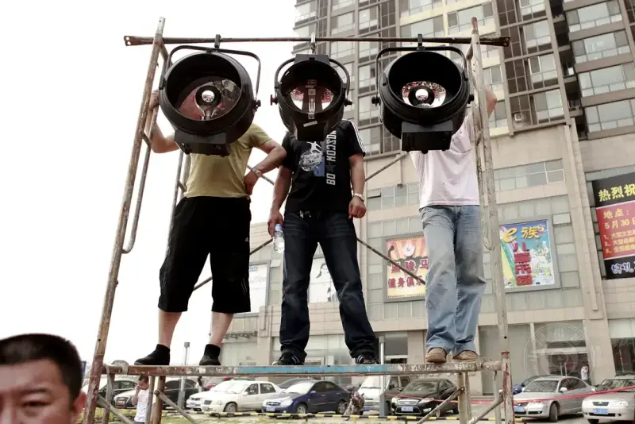
“Urban Sketches” series
June 27, 2010
Zichuan, Shandong
Three young people watch a show from a lighting rig.
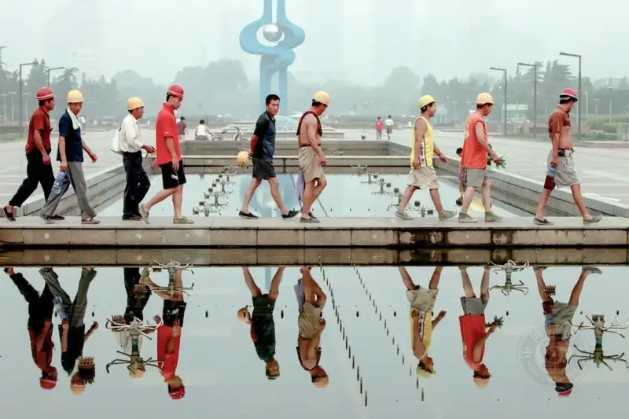
“Urban Sketches” series
July 22, 2010
Jinan, Shandong
A construction worker crossing Quancheng Square.
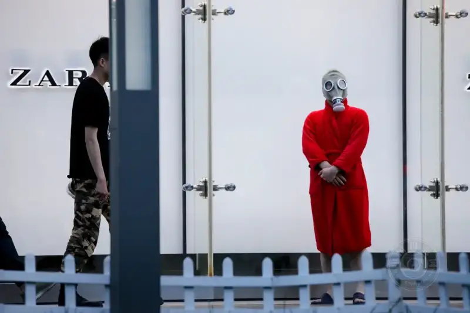
“Urban Sketches” series
May 5, 2015
In front of Hang Lung Plaza, Jinan, Shandong
An actor in a gas mask filming a documentary.
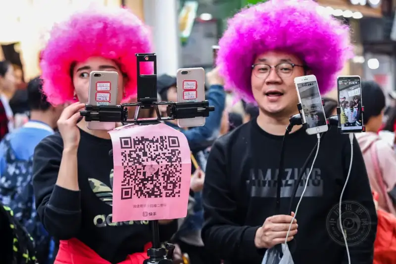
“Urban Sketches” series
March 31, 2018
Furong Street, Jinan, Shandong
An influencer livestreaming.
Zhang Yue: Critics say your urban work will gain value over time, and that you are like a man digging a deep well. Which project do you think will gain value? Which is the deep well, and how deep?
Zhao Shoujun: The well metaphor came from Zhang Fangming, a poet and critic I know, when he reviewed Making a Living. Both the project and his review ran in People's Photography.
Urban work gains value over time because cities change faster than anyone expects. True documentary images move with that change. The faster the times move, the more the frozen moments become a record and a comparison. I think China's Zebra Crossing, Making a Living, Urban Sketches, and Small Stalls will gain record value with time.
The value of documentary lies in recording truth, which differs from news, which praises or criticizes. Its value is the truthful capture of a human moment, and the content carries its own judgment. This year a set of my Urban Sketches was shortlisted for the 29th National Exhibition, then withdrawn when some said it showed rule-breaking: a rider carrying a passenger, a skateboarder on the road, and high work without a helmet. I see this as a prejudice against documentary. Those violations are everyday sights, and recording them is not staging or fraud. The ordinary things we stop noticing are exactly the stuff of humanistic documentary. The work does not promote or warn. It is an objective, true record of a moment, and the viewer observes, reads, and thinks. Once you label a frame as a violation, its meaning becomes shallow and it slides into news. If every unlawful sight were barred from social documentary, how would we choose truth? How would we understand work on drug use, mine disasters, pollution, social problems, or war?
Zhang Yue: Which of your existing works do you think has the most depth?
Zhao Shoujun: I would not claim great depth. But Cement Men, China's Zebra Crossing, Urban Sketches, and Making a Living are long projects into which I have put much work, and I will keep shooting them well.
Zhang Yue: A decade ago, Xinhua reporter Liu Yu wrote that many photographers chase Tibet and Hainan, while you stayed local and aimed at ordinary people nearby. But recent work reaches Beijing, Tianjin, Shanghai, Shaanxi, Shanxi, Shandong, and Zhejiang. Can you talk about the shift from local to distant work?
Zhao Shoujun:That was for my Between Doubts project. Through Jiang Hao of the Jinan Daily, Liu Yu wrote a review titled The Scenery Is Elsewhere, the Wonder Is Nearby. It ran as a full page in People's Photography on October 31, 2012, and taught me a lot. My travel now comes from work, not from a change of heart. I am based in Jinan and travel widely for business, so I shoot along the way. Whether local or distant, my intent and vision stay the same. What changes is that my field of view widens and my range grows.
Zhang Yue: Your work has entered the 8th International Photography Exhibition, the 27th National Exhibition, and the 13th China Photography Art Festival. How do you keep getting into these national shows? Do subjects matter most, or art? Can you share your contest experience?
Zhao Shoujun: There is no experience to share. Luck plays a big part, honestly.
Let me describe the photo in the 8th International Exhibition. In December 1995, local friends and a Daily photojournalist asked me to go to Chengzi Village in Taihe Town, known as the home of garlic sprouts. At dawn, as sales began, a thousand local families had grown winter garlic sprouts with underground hot-spring water and reaped a good harvest. The sprouts sold nationwide, and each family earned over ten thousand yuan. I used a Minolta 700 with Fuji color film and shot two rolls of the busy harvest. I chose one frame and named it Desolate Beach Then, Golden Beach Today. It won silver in the national Leica Cup and third prize in the 6th Asian Face Chinese Photography Contest, entered the 8th China International Photography Exhibition in 1997, and in 1998 I joined the China Photographers Association.
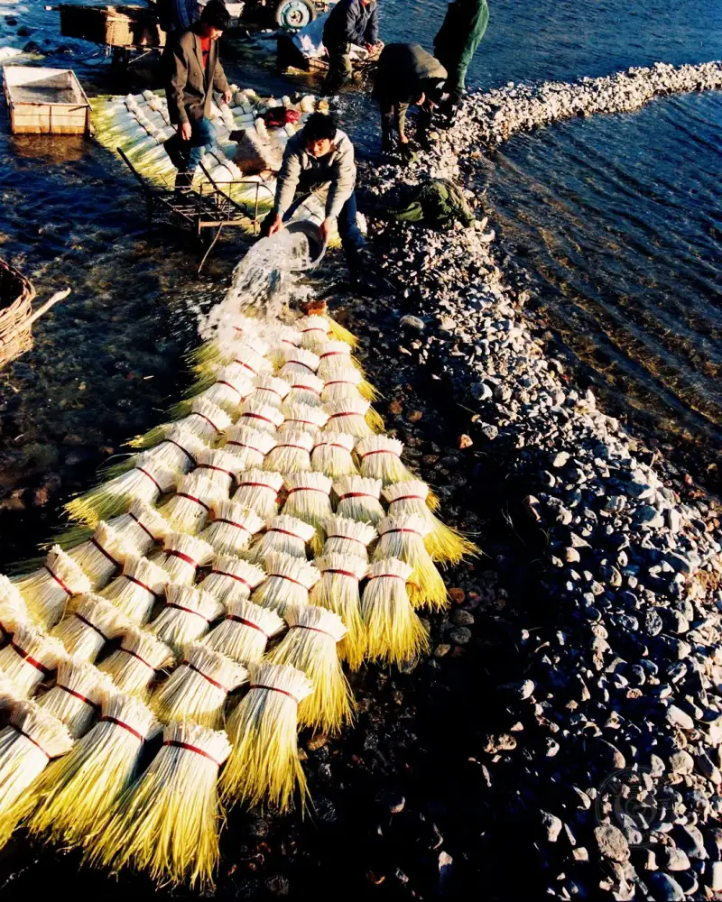
“Desolate Beach Then, Golden Beach Today”
December 1995
Chengzi Village, Taihe Town, Zichuan, Zibo, Shandong
Villagers rinsing garlic sprouts.
Luck really does play a big part. At root, I did not photograph to win prizes or fame. It is a love and an interest. The more you see and shoot, and the more you meet teachers with real skill, the more you learn from their work and direction. You see where their work succeeds and yours falls short, and then you improve. This looks simple, but to truly grasp it takes steady effort.
I always feel my work is missing something. Maybe that feeling drives me and keeps me urgent.
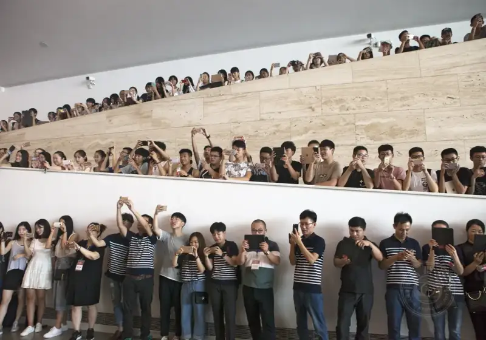
“The Phone Era”
August 8, 2017
The 5th FIAP Congress in Jinan
The opening drew countless photographers and enthusiasts.
People looking down, never without a phone,
had become a true picture of the phone era.
The Phone Era entered the 27th National Exhibition, showed at the 13th China Photography Art Festival, and was invited to China's Century of Common People: An Image Exhibition of Chinese Daily Life.
Zhang Yue: As vice chair of Zibo and chair of Zichuan, what have you done for local photography?
Zhao Shoujun: As a local association leader, my main job is to train newcomers and key members, raise overall skill, and make better work. The method is to bring in and go out. Bringing in means inviting noted photographers to lecture and critique members' work. Going out means attending festivals and shows to study masters and exchange ideas. We also organize field trips, events, and contests, such as the recent Four Seasons of Bangyang, New Zichuan in Light for the 20th Party Congress, and Conserve Water contests.
The second role is to use photographers to serve local publicity and tell Zibo's story. Under the planning of director Tang Jiafu, we organized thirty photographers over two years to shoot 54 national and provincial ancient villages, and published Traditional Villages of Zichuan District. The book pairs text and images and records the villages with real documentary value. It was well received.
Zhang Yue: Thank you for the interview. I wish the Zichuan association under your leadership greater success, and I look forward to more of your work.
Zhang Yue
Reporter for China Photos.
Post-90s woman, writes in Chinese, based in Beijing.
Has published hundreds of thousands of words of arts criticism and political commentary.
Now a master's student in photography and digital media at the Chinese National Academy of Arts.
Fond of documentary photography.